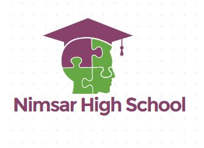

|  | Nimsar High School |
|
||||||||
| Home | About Us | Contact Us | Information Us | Teachers | Courses | Admission | Event | Images | Online class |
|---|
Each year the annual school sports are held in every school. In our school, the last annual sports held on 26st January . We enjoyed our sports day very much. The preparation for the sports was going on for days. Our school campus was decorated. A stage was set up in front of our school complex to accommodate the guest. The whole playground was adorned with colorful papers, flower, and banners. We made a gate to give a hearty welcome to our chief guest. The deputy commissioner was invited as our chief guest. He arrived at 9 a.m. our programme started at 10 a.m. in time. The chief guest hoisted the national flag and inaugurated the ceremony. The sports events began. About two hundred and fifty students compete in those events. The important events were high jump, long jump, hundred meter sprint, two hundred meter sprint, cockfight etc. some students took part in dressing as you like. A band party was hired. They played music while the sports events were going on. This gave us much amusement. At the end of sports, the prize giving ceremony was held. The chief guest distributed the prizes among the winners. He also gave us some valuable advice in his speech. At last, the headmaster thanked all to be present in the ceremony and the function ended.


Wreath-laying at Shaheed Minar on the occasion of Great Martyrs' Day and International Mother Language Day.Every year our school organize this program.Many student attend this program.
It was the end of the final school term. The students planned to hold a class party. Some of the students volunteered to be in charge of the food and drinks. The food that they prepared is biscuits, cakes, sweets, mee-hoon and iced-drinks. They organized some games such as ‘Treasure Hunt’ and ‘Musical Chairs’, which everyone enjoyed. After the games, they turned to delicious food and drinks. The teacher gave away prizes to the winners of the games. Lastly, they took photos and went home happily after cleaning up the classroom. They felt the class party was a good way to end the year.

Pahela boishak is one of the most traditional cultural program for Bangali.Every year our school organize this program.Many student attend this program.In the morning they eating pantha Vat and Hilsha Fish fry.In the afternoon they go to the fair.